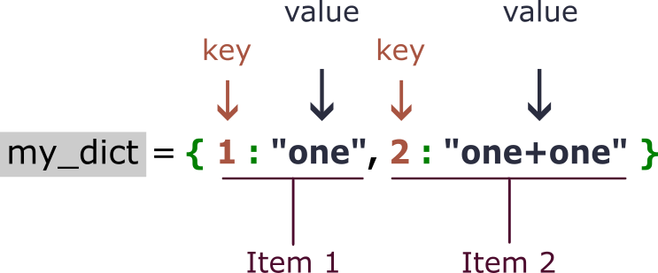

Learning Objectives
Introduction
Just like a lexical dictionary, Python dictionaries map a key (the word itself) to a value (its definition). This ability to associate a set of values with a descriptive key is what makes dictionaries so powerful, as you are explicitly calling a value from a unique name. This contrasts against a Python list, where you are reliant on a numerical index that is reusable and not explicitly informative to the user.
Click here to read the official Python documentations on dictionaries, from Python.org.
In other coding languages, the generic term for data structures analogous to this would be "associative array" or "memory". As dictionaries are indexed by keys, and not numbers, they are unordered (just like sets). Keys can comprise any immutable type, such as a string, integer or float. You can use other immutable structures, such as tuples, however strings and numbers are the most common.
In Python, dictionaries are technically described as unordered because they cannot be accessed using numeric positions (like lists).
For instance, you cannot execute my_dict[0]
However, since Python v3.7+, dictionaries preserve insertion order:
- Keys appear in the order you added them
- But this order is not the same as having index positions
- You still look up items by key, and not by position
Dictionaries remember insertion order, but they are not indexable like lists.
See the diagram below for a visual conceptualisation of how dictionaries are structured:

Creating a Dictionary
To create a dictionary we typically use curly brackets {} with : separating the key from its value, i.e. {"key" : value}. The combination of a singular dictionary key and its value is referred to as a dictionary item. Each item is then separated from the next by a comma, as seen in lists, tuples, sets.
Key: A unique identifier used to access a value in a dictionary (e.g., "temperature_celsius")
Value: The data associated with a key in a dictionary (e.g., 30)
Item or element: A key-value pair within a dictionary (e.g., "temperature_celsius": 30)
You may have noticed that we started each item on a new line. This format is considered good practice as it increases readability, however it is not necessary for the code to execute. You can also create the dictionary on a singular line, which may be easier, in some instances.
For example:
woodland_dict = {"dominant_species": "Quercus robur", "soil_ph": 6.2, "rain_ph": 7.1}Another criterion for a dictionary key is that it must be unique within the dictionary. Whilst it won't give you an error if a key is repeated, the latest key : value pair will override an existing one.
An easy point of confusion is that sets can also be instantiated with curly brackets {}. For Python novices, this is why using the set() class is often preferred. Having each element separated by a colon : is what indicates to Python that you are creating a dictionary, and not a set.
Creating a dictionary with dict()
For consistency dictionaries can also be made using the dict() class. It is much more explicit in its creation of a dictionary; however this extra verbosity is often unnecessary as the {} syntax does specify a dictionary, when each element is a key-value pair separated by a colon :.
This does slightly break our rule of explicit is better than implicit, however rules are made to be broken.
As with other data structures, you can obtain the length of a dictionary using len(). The length, in this case, represents the number of key–value pairs, not the number of keys plus values (summed). Do not forget: a single item or element in a dictionary constitutes both a key, and its corresponding value.
1.
Create a dictionary called rainforest_dict with the same keys in woodland_dict. Assign the values given below to their respective keys (dominant_species, soil_ph, rain_ph):
- "Gorilla beringei beringei"
- 7
- 6.4
Accessing your values
As discussed, rather than accessing our values through a numerical index, we use the key - whether that's a string or number. As with indexing a list, the syntax is to use square brackets [] after the variable's name.
And just like trying to index a list out of range, if you try to use a key that does not exist, the Python interpreter will generate a KeyError.
Checking for keys
If you're not sure if a key exists in a dictionary you can use the membership operator in to test the membership of that key.
Note: this will only search the keys, and not the values.
2.
Using both the rainforest_dict you created and the woodland_dict, extract the values for rain_ph from both, and assign each to their own variables.
- Use the
>operator to show which one is greater. Give your answer as a boolean output.
Modifying Dictionaries
Much like a list, dictionaries are mutable. Adding new values to a dictionary is easy, and is very similar to replacing a value in a list. We can also make any modification to a value (so long as we know its associated key) by essentially overwriting that value.
Adding new items
Creating a new item in a dictionary is very similar to accessing a value associated with a given key.
Once again, the syntactical rule specifies that we use square brackets [] after the dictionary variable's name, except this time we're providing a new key. This is then assigned to the new value using the assignment = operator.
Modifying existing items
We can also modify existing items in the same manner, by calling a key and assigning it (using =) to a new value. This overwrites the old key : value pair, as you cannot have duplicates of a key in a dictionary. In this way, despite the keys themselves being immutable, the key : value pair can be altered.
Removing items
Items are also easily deleted using two methods. The simplest of these is del, which is used before calling a key on the dictionary variable.
Sometimes we may want to delete the item, but retain the value for evaluation in the moment. For this we use the .pop() method. Calling it with a key as the argument removes the item and returns the value associated with it.
The above cell can only be run once, as the key 'colony_count' has been removed. It's something to be careful of when working in notebooks, as having multiple cells that you can execute in any order, any number of times, means that you can sometimes run your code in the wrong order.
3.
You're tracking sample concentrations in a microbiology lab, you start with the dictionary below:
- Add a new sample: Add
sample_005with a concentration of3.0. Print the updated dictionary. - Modify existing data:
sample_002was re-measured and the concentration is now 1.4. Update it and print the new value to confirm. - Remove using
del:sample_001got contaminated and needs to be removed from tracking. Usedelto remove it, thenprintthe dictionary to confirm its removal. - Remove using
.pop(): Extractsample_003's concentration using.pop()and store it in a variable calledarchived_concentration. Print both the extracted value and the remaining samples dictionary. - Print how many samples remain in the dict.
Methods
As with the previous data structures, there are various methods that can be called to augment or retrieve specific information from a dictionary. We will run through some of the most commonly used methods, here.
.get()
The .get() method is one of the most useful ways to retrieve a value from a dictionary. Unlike normal key access, .get() will not raise an error if the key is missing. This makes it ideal when your dictionary is being created automatically, and you are not sure whether a particular key exists. In these cases, .get() can often replace a try/except block for safe lookups.
Let's take our experiment dictionary that we made, earlier. These key-value pairs are extracted from data inputted into a colony-counting machine. If an input is missed, it is not added to the extracted dictionary: for example, "incubator_humidity". If we tried to call this key, our script would return an error, causing it to terminate, prematurely. When working in a Jupyter notebook, we can easily check and adjust our code, accordingly. But ordinarily, we would have defined our own Python function, or have written our own Python script that we could call, which would require more work to fix.
The value NaN is a standard way to represent missing or undefined data in Python and data science disciplines. Its implementation will be expanded upon more in the Data Handling module of this course. NaN stands for "Not a Number", and was first used in mathematical computations for non-real numbers, among other things.
Retrieval methods
Given the key:value pairing, there are three different methods that allow you to retrieve either the keys, values, or both together (items).
.keys()
One of the main appeals to using Python dictionaries, is the easy retrieval of values, given their keys. However, as these keys can be informative themselves, it is often useful to retrieve the keys, too.
As can be seen above, the object type returned is dict_keys, not a list. Although they both act very similarly in terms of iteration, dict_keys has some differences that allow it to act much like a Python set would.
For example, with experiment missing incubator_humidity, we may want to check between experiments what keys are common or unique between the two: similar to the .union() and .difference() methods for sets, using & and -.
As you may have noticed from the curly brackets, the output of these operations is a set object.
.values()
As with the .keys() method, you can use .values() to retrieve all the values. Unlike dict_keys, the returned dict_values object doesn't have special operations, and behaves similarly to a list. Depending on your intended application, this could be useful, as you could apply mathematical and statistical operations on the resultant list. However, if this is your aim, it may be best to either convert the dictionary values to a list, or use a list from the outset.
.items()
Finally, we can pull out a list of both the keys and values using the .items() method. The resulting list will contain tuples, with each tuple containing the key and value, in that order.
The typical use of .items() is to iterate (loop) over each key : value pair, sequentially. We'll explore this further in the next lesson, Python Fundamentals 4. This technique is normally used when you want to modify each value in the same, repeatable way. For example, if a dictionary contains different datasets that require the same analysis, you may want to keep track of each of them by using explicit naming.
4.
Using the experiment_1 dictionary from above:
- Extract all the keys and store them in a variable called
exp1_keys - Typecast the object to a
list - Write an
ifconditional statement that checks if the value"A1"is present in the list - Only have the
ifstatement execute when"A1"is not present (Hint: use logical negation)
Nested dictionaries
Nested dictionaries are a common tool for deepening and extending the power of dictionaries as a data structure. Much like nested lists, this way of constructing a dictionary can generate structured data with hierarchical organisation, giving a dictionary a greater depth of information.
Implementing a nested dictionary is easy: simply use curly brackets within curly brackets {{}}.
Just like our tip about using a new line for each item, it is also good practice to use an indent when starting the child or sub-dictionary you are defining. Once again, not doing so will not affect the execution of the code, but it does make it easier to read. The key to good Python code, is legibility: the less complexity a user has to track, the less likely they will be to miss something, or make a mistake.
Accessing a nested dictionary
The principles for accessing, altering or removing the values stored in nested dictionaries, are the same as those that apply to element access with nested lists.
As with lists, you can use sequential indexing to access the values you want.
5.
Using the organisms dictionary above:
- Add a new organism called
"homo_sapiens"with the following properties:
domain: "eukaryote"
genome_size_mb: 3200
generation_time_years: 25- Access and print the domain of "escherichia_coli"
- Update the genome size of "saccharomyces_cerevisiae" to 12.5
- Print the complete updated organisms dictionary
Summary
In this lesson, we explored Python dictionaries - a powerful data structure that allows you to store and retrieve data using descriptive keys, rather than numerical indices.
Here are the key takeaways:
Key Concepts:
- Dictionaries map keys to values, creating meaningful associations in your data
- Keys must be unique and immutable (strings, numbers, tuples)
- Dictionaries are mutable - you can add, modify, and remove items after creation
- Unlike lists, dictionaries are unordered (although Python 3.7+ maintains insertion order)